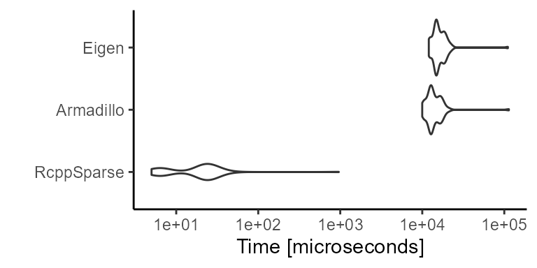
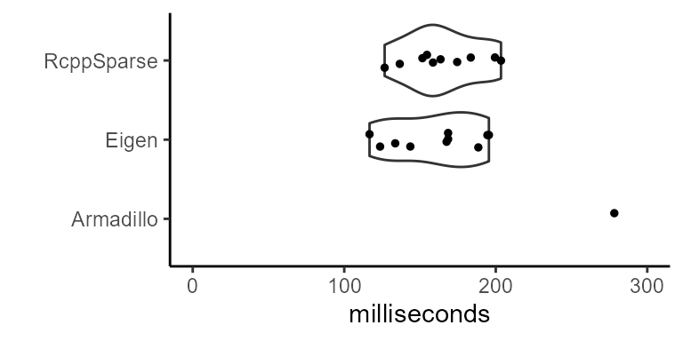

Documentation.RmdRcppSparse::Matrix?Accessing R sparse matrix objects in C++ via RcppArmadillo and RcppEigen requires deep copies because R SEXP types must be converted to C++ types. However, the Rcpp package provides base objects (Rcpp::NumericVector and Rcpp::IntegerVector) that are convenient containers around R objects existing in memory. RcppSparse::Matrix simply wraps these containers to provide a zero-copy by-reference class for reading R sparse matrix objects in C++.
Unlike RcppArmadillo and RcppEigen, RcppSparse wastes no time or memory in the R to C++ to R conversion process.
When to use: When only read access is needed and additional functionality in RcppArmadillo or RcppEigen is not needed.
When not to use: When memory or R -> C++ -> R conversion is not limiting or write access is needed.
Install RcppSparse from CRAN:
install.packages("RcppSparse")Include the header in your C++ file using #include <RcppSparse.h>. It is then unnecessary to include Rcpp.h, and Rcpp.h may not be included prior to including RcppSparse.h.
The Matrix class contains public members corresponding exactly to the Matrix::dgCMatrix-class:
x: An Rcpp::NumericVector of the non-zero elements of the matrix.i: An Rcpp::IntegerVector of the same length as x specifying the column indices of the non-zero elements of the matrix.p: An Rcpp::IntegerVector of pointers for each column to the initial index in i and x of elements in the column.Dim: An Rcpp::IntegerVector of length 2 giving the number of rows and columns in the matrix.Any object of class Matrix::dgCMatrix can be automatically converted to an Rcpp object of class RcppSparse::Matrix.
However, to convert back to an R object, we use the .wrap() method and return an Rcpp::S4 object.
library(Matrix)
A <- rsparsematrix(nrow = 10, ncol = 10, density = 0.1)
B <- convert(A)
all.equal(A, B)
#> [1] TRUEIt is not necessary to specify const when passing an RcppSparse::Matrix because it is read-only. Also, because base Rcpp types are pointers, it is unnecessary to pass by reference.
Because RcppSparse::Matrix is a zero-copy by-reference read-only version of the R object, it is not templated and types are always double (x) and integer (i, p, x).
Matrix(SEXP) (usually handled by Rcpp::as)Matrix(Rcpp::S4)Matrix()Matrix(Rcpp::NumericVector x, Rcpp::IntegerVector i, Rcpp::IntegerVector p, Rcpp::IntegerVector Dim)Most commonly, the matrix is seamlessly passed into an Rcpp function from R, and RcppSparse takes care of the conversion (with some help from Rcpp).
However, Matrix may also be constructed from Rcpp vectors:
//[[Rcpp::export]]
Rcpp::S4 construct_from_vectors(){
Rcpp::NumericVector x = {0.41, 0.35, 0.84, 0.37, 0.26};
Rcpp::IntegerVector i = {0, 2, 0, 1, 1};
Rcpp::IntegerVector p = {0, 0, 1, 2, 4, 5};
Rcpp::IntegerVector Dim = {5, 5};
// this constructor...
RcppSparse::Matrix m(x, i, p, Dim);
// ... is equivalent to this:
RcppSparse::Matrix m2;
m2.x = x;
m2.i = i;
m2.p = p;
m2.Dim = Dim;
return m2.wrap();
}
construct_from_vectors()
#> 5 x 5 sparse Matrix of class "dgCMatrix"
#>
#> [1,] . 0.41 . 0.84 .
#> [2,] . . . 0.37 0.26
#> [3,] . . 0.35 . .
#> [4,] . . . . .
#> [5,] . . . . .Because each slot in a Matrix is a public member, they may also be directly modified with the caveat that R S4 object and/or iterators may be invalidated (very bad things can happen) if you do not really know what you are doing.
RcppSparse::Matrix objects contain the following member functions:
.rows(), .nrow()
.cols(), .ncol()
.nonzeros(): return the x vector.innerIndexPtr(): return the i vector.outerIndexPtr(): return the p vector.crossprod().colSums(), .rowSums(), .colMeans(), .rowMeans()
.t() (wraps Matrix::t method for dgCMatrix).InnerIndices(int col): return std::vector<unsigned int> of rows with non-zero values in a column.emptyInnerIndices(int col): return std::vector<unsigned int> of rows with zero values in a column.isAppxSymmetric(): checks approximately for symmetry by checking for square dimensions and then by comparing the first row/columnRcppSparse::Matrix is read-only. However, the values of elements may be accessed using the parenthesis operator:
double Matrix[int n] return the n’th nonzero valuedouble Matrix(int row, int col)Rcpp::NumericVector Matrix(Rcpp::IntegerVector row, int col)Rcpp::NumericVector Matrix(int row, Rcpp::IntegerVector col)Rcpp::NumericMatrix Matrix(Rcpp::IntegerVector row, Rcpp::IntegerVector col)There are no specializations for block lookup, thus, complicated lookups using the parenthesis operator can quickly become inefficient and iterators should be preferred.
Marginal dense subsets are also supported, although these may be better accessed via sparse iterators:
Rcpp::NumericVector Matrix.col(int i)Rcpp::NumericMatrix Matrix.col(Rcpp::IntegerVector i)Rcpp::NumericVector Matrix.row(int i)Rcpp::NumericMatrix Matrix.row(Rcpp::IntegerVector i)The major focus of the RcppSparse::Matrix class is providing efficient const iterators for traversal over non-zero values.
::InnerIterator: Non-zeros in a column::InnerRowIterator: Non-zeros in a row (inefficient, prefer InnerIterator)::InnerIteratorInRange: Non-zeros in a column at rows also in a provided index vector::InnerIteratorNotInRange: Non-zeros in a column at rows that are not in a provided index vectorConstructors:
it(RcppSparse::Matrix, int) constructor for InnerIterator and InnerRowIterator
it(RcppSparse::Matrix, int, std::vector<unsigned int>) constructor for InnerIteratorInRange and InnerIteratorNotInRange
Operators:
operator bool() to check if the iterator is in the range++it, pre-incrementMember functions:
it.value(), const double reference to valueit.row(), const int giving row of current valueit.col(), const int giving column of current valueThis example uses a column iterator to calculate column sums:
//[[Rcpp::export]]
Rcpp::NumericVector column_sums(RcppSparse::Matrix& A) {
Rcpp::NumericVector sums(A.cols());
for (size_t col = 0; col < A.cols(); ++col)
for (RcppSparse::Matrix::InnerIterator it(A, col); it; ++it)
sums(col) += it.value();
return sums;
}
A <- rsparsematrix(5, 5, 0.5)
column_sums(A)
#> [1] -1.990 0.373 -0.530 0.498 0.330Usage of the row iterator is similar, but should not be used unless absolutely necessary as row-wise lookup in a column-major storage format is much less efficient than column-wise lookup.
The InnerIteratorInRange iterator receives a std::vector<unsigned int> giving row indices in a range over which to iterate. This is similar to the Boost ForwardTraversalIterator concept. This iterator can be useful for comparing two sparse matrices, and can be more efficient than simply pairing two iterators. InnerIteratorNotInRange usage is similar, but looks up values not in the specified range.
Like Rcpp objects, RcppSparse::Matrix is a reference to R objects. Any changes to object on the C++ side will affect the R object. If this is not desired, use .clone():
//[[Rcpp::export]]
Rcpp::S4 change_value1(RcppSparse::Matrix A){
RcppSparse::Matrix B = A.clone();
B.x[0] = 999;
return B.wrap();
}
//[[Rcpp::export]]
void change_value2(RcppSparse::Matrix A){
A.x[0] = 999;
}
A <- rsparsematrix(3, 3, 0.5)
A2 <- change_value1(A)
A2@x[1]
#> [1] 999
A@x[1]
#> [1] -1.5
change_value2(A)
A@x[1]
#> [1] 999The following are very rudimentary benchmarks that are intended to show that RcppSparse::Matrix is on par with arma::sp_mat and Eigen::SparseMatrix. Although evidence here is limited, further application has shown that performance is very much on par both libraries, and consistently exceeds that of the Matrix R package in equivalent operations.
Here we measure the latency of constructing a 1% dense 10000 x 10000 sparse dgCMatrix in RcppSparse::Matrix, arma::sp_mat, and Eigen::SparseMatrix<double>:

This benchmark shows how important direct access to R objects in memory can be when performance and memory usage is a major concern.
Here we compare the performance of RcppSparse::Matrix column iterator to corresponding counterparts in RcppEigen and RcppArmadillo. We use the RcppClock R package for benchmarking the Rcpp code itself to avoid the effects of latency during the Rcpp wrap and as routines. 10 outer and inner replicates are run:
